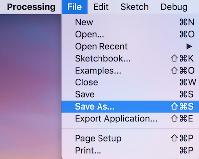

under File > Save
choose the Save As option.
How to Save Your Sketch
By default, your programs are saved to the "sketchbook,"
a folder that collects your programs for easy access.
|
Your sketches can be saved under File > Save |
|
|  | If you want to save your sketches as a different name, choose the Save As option. |
It's always good practice to save your sketches often!